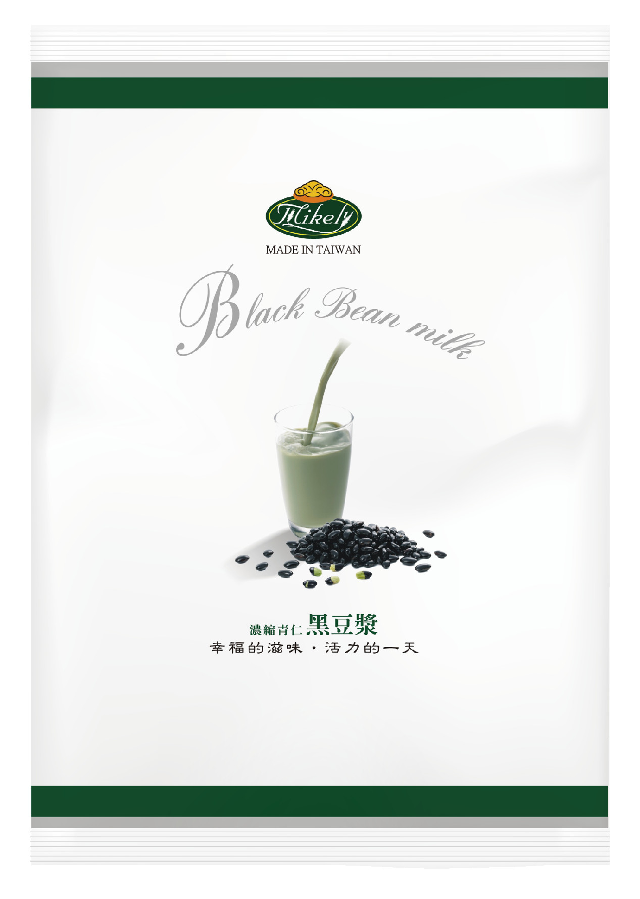
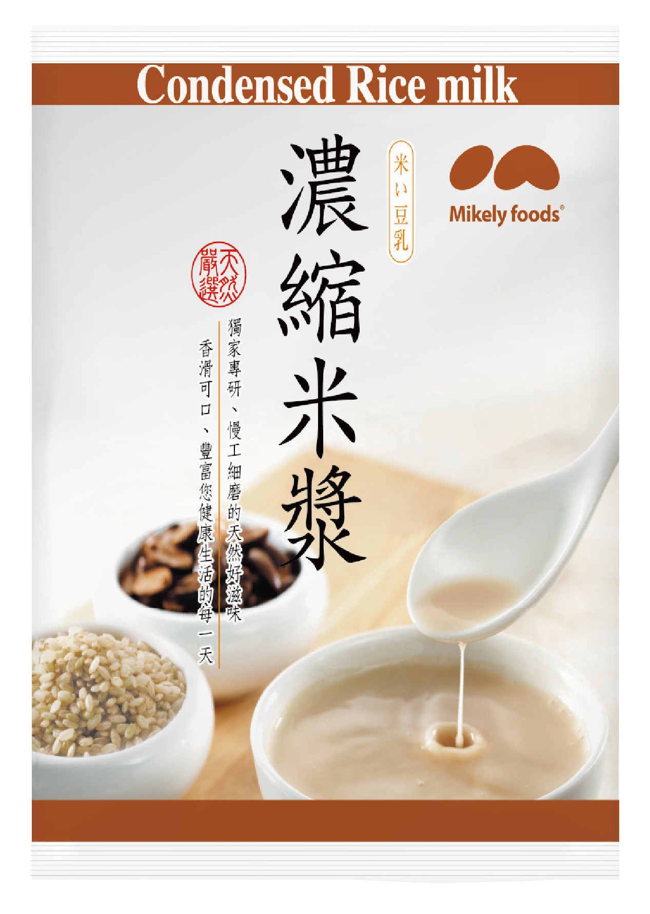
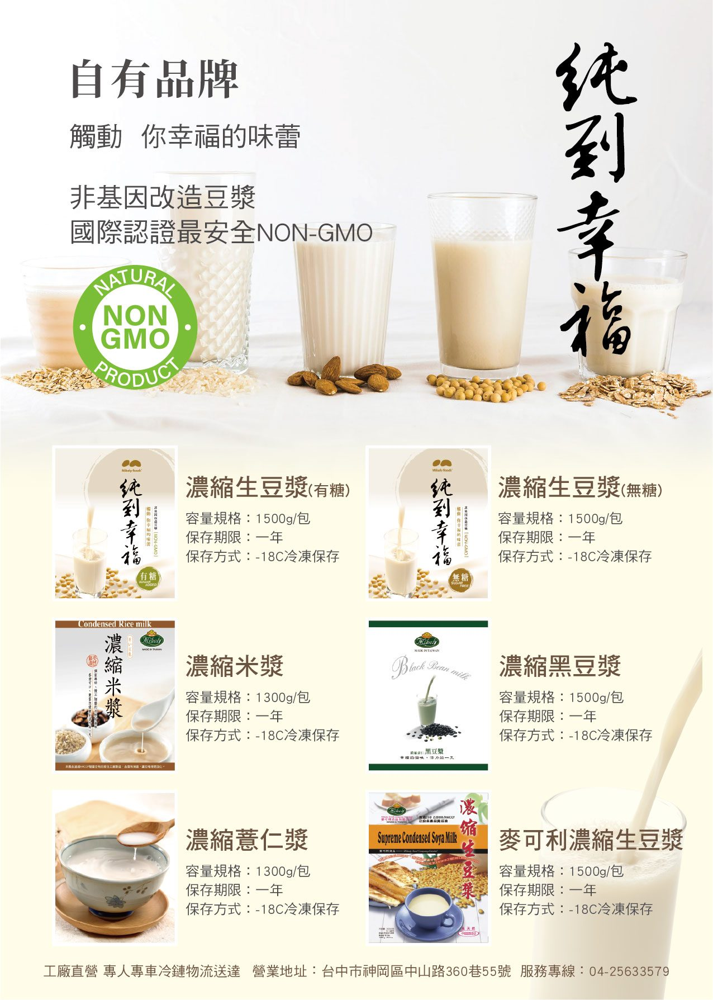

냉동 농축 두유 시리즈
불리기도 갈기도 필요 없이 끓는 물에 넣어 끓이기만 하면 됩니다. 전 제품 -18℃에서 1년 보관.

Non-GMO가당무가당
순도행복 농축 생두유
| 중량 | 1500g／팩 |
|---|---|
| 원재료 (무가당) | 물, 대두(Non-GMO) |
| 대두 원산지 | 캐나다, 미국 |
| 보관 방법 | -18℃ 냉동 보관・유통기한 1년 |
조리 방법: 물 3500~4000cc를 끓인 후 얼린 채로 넣고 저어 5~10분간 팔팔 끓입니다.

1500g
농축 검은콩 두유
| 중량 | 1500g／팩 |
|---|---|
| 원재료 | 물, 검은콩, 대두(Non-GMO), 설탕 |
| 보관 방법 | -18℃ 냉동 보관・유통기한 1년 |
조리 방법: 물 3000~3500cc를 끓인 후 얼린 채로 넣고 저어 5분간 끓입니다.

1300g
농축 쌀 음료(미장)
| 중량 | 1300g／팩 |
|---|---|
| 원재료 | 물, 설탕, 멥쌀, 땅콩, 찹쌀가루, 감자전분 |
| 보관 방법 | -18℃ 냉동 보관・유통기한 1년 |
조리 방법: 물 3500~4000cc에 넣고 끓을 때까지 저은 뒤 약불로 6분 가열합니다. 침전은 자연스러운 현상입니다.

1300g
농축 율무 음료
| 중량 | 1300g／팩 |
|---|---|
| 원재료 | 물, 율무, 적율무, 대두(Non-GMO) |
| 보관 방법 | -18℃ 냉동 보관・유통기한 1년 |
조리 방법: 물 3500cc를 끓인 후 얼린 채로 넣고 저어 약불로 6분 가열합니다.